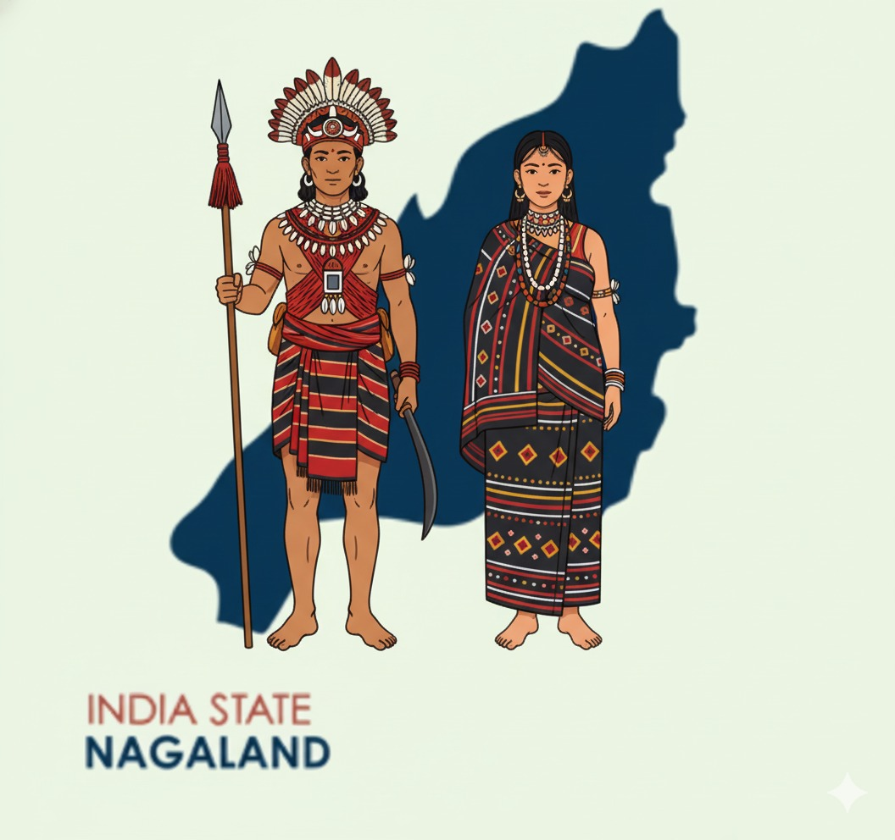

Quick history of Nagaland
Nagaland — literally "land of Festivals" — is also known as the " Switzerland of the East" This moniker is due to its stunning scenery, which includes dramatic mountains and lush valleys.
Hilly state with steep slopes , with location in a high-risk seismic zone (Seismic Zone V).

Capital: KohimaStatehood: 1963
Detailed timeline & preparedness tips
- June-sept 2025 monsoon crisis — intense rains triggered flash floods across many districts, with landslides reported in East Kameng, Dibang Valley, Anjaw and others. Relief operations and air-drops were used to help cut-off villages.
- Common impacts — damaged roads, washed-away bridges, destroyed crops, temporary sheltering in relief camps, and travel disruption .
- Preparedness tips — keep an emergency bag (food, water, torch, first-aid), register with local disaster authorities, avoid river banks during heavy rain, and follow official evacuation orders.
- How you can help — support verified local relief funds/NGOs, donate through government-endorsed channels, or volunteer through district disaster management teams.